Introduction
Hereafter we present a copy of the sprint backlog with for this sprint
| Must Have |
Should Have |
Could Have |
The system must notify the parking manager if the car has not been picked up from the outdoor area (F11)
The system must collect state information from the parking area (temperature, fan) (F12)
The system must collect state information from the trolley (F13)
The parking manger can stop the trolley when the temperature of the parking area reaches a certain limit (F14-NF4)
The system must start/stop the fan when the temperature reaches or leaves a certain limit (F15)
|
The system should identify and authenticate the parking manager (F16) |
The ParkServiceStatusGUI is supposed to show a prompt to the parking manager to manage and monitor the system (F10) |
This sprint should end the development cycle and should be done in
5 days.
Project
Starting from the
logic architecture derived during the analysis phase and considering the results of
Sprint3 let's now "zoom in" and update
the components we require for this sprint: ManagerService, ParkServiceStatusGUI(SpringController/View), ThermometerController and mock, Fan, SonarController and Interface. Furthermore, we want to specify that all what we developed in Sprint3 stand also for this sprint and only changes and updates to it are hereby presented.
ManagerService
The ManagerService as a Moore's Finite State Machine
The ManagerService is the component that contains most of the business logic in these sprint use cases. It will be implemented as an actor, because we need a component capable of accepting and queuing different requests in a non-blocking manner and to
communicate and behave with a message-based strategy. For this reason we will once again exploit the qak infrastructure and language, implementing the service as a FSM, whose state changes are triggered by events and messages.
The FSM Diagram attached describes the service states and the behaviour of the one which are of interest for this sprint. The diagram was designed loosely basing on the ManagerService designed and developed for the First Executable Model (parkingArea.qak) of the system.
|
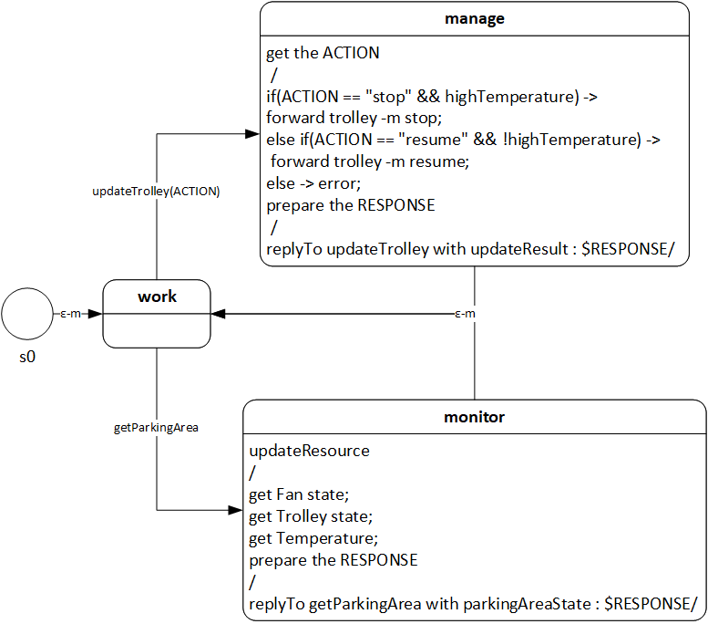
|
ParkServiceStatusGUI
As already seen in Sprint1, we divided the ParkServiceStatusGUI component, identified during the analysis phase in a SpringController and View.
SpringController/BaseController
Methods to manage the remaining RestAPIs where added to the SpringController and methods to present the right views were added to the BaseController.
The BaseController has also been updated to be notified when the temperature exceeds (or goes back under) the TMAX(= 30) value and when a car engages the OUTDOOR area
for more than DTFREE(=60) seconds. It will implement an observer (registering to the SonarController and ThermometerController) to send an asynchronous message to the manager and let him/her know that an alarm was fired.
It will also update the fan resource whenever the temperature raises above/below the threshold, as per F15. This was delegated to the observer as it is the one to be notified of the temperature change and it seemed pointless to send a message to the ManagerService, creating another state for this actor, just to update the fan resource.
|
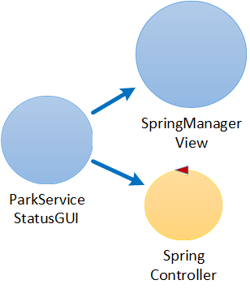
|
Another Spring feature for authentication: SpringSecurity
An addition was made to the already presented controllers: the SpringSecurity controller has been introduced to deal with the manager login/logout tasks, as per POR authorize and F16
This class inherits from the WebSecurityConfigurerAdapter offered by Spring, to automatically configure what pages require authentication, what are the login/logout urls, what to do after a succesfull authentication, or if there are errors and what user can access what pages/APIs.
For demoing purposes, the "manager" user and its password are stored in memory (cyphering the password) at the Spring startup.
Using RESTful APIs for the M2M interaction and JS for H2M interaction (cont.d)
As already known, the M2M interaction has been developed using RESTful APIs (API docs); these have been updated to match the PORs manage and monitor. A sequence diagram for these PORs is presented to the right.
A client-side manager.js file
changes the DOM elements of the page according to the responses of the SpringController (e.g. changes buttons to let the manager perform different actions, updates the system state after a notification, etc.).
Moreover, the manager.js file also opens a WebSocket connection, that will be managed server-side by our WebSocketConfig configuration class: another Spring feature that allows a simple and automatic configuration of message handling from WebSocket clients, using STOMP.
From this connection, the BaseController will notify the manager when the temperature exceeds (or goes back under) the TMAX(= 30) value and when a car engages the OUTDOOR area
for more than DTFREE(=60) seconds.
Finally, the manager.js file will also activate a 1s timer, to fetch fresh information about the parking area every second.
|
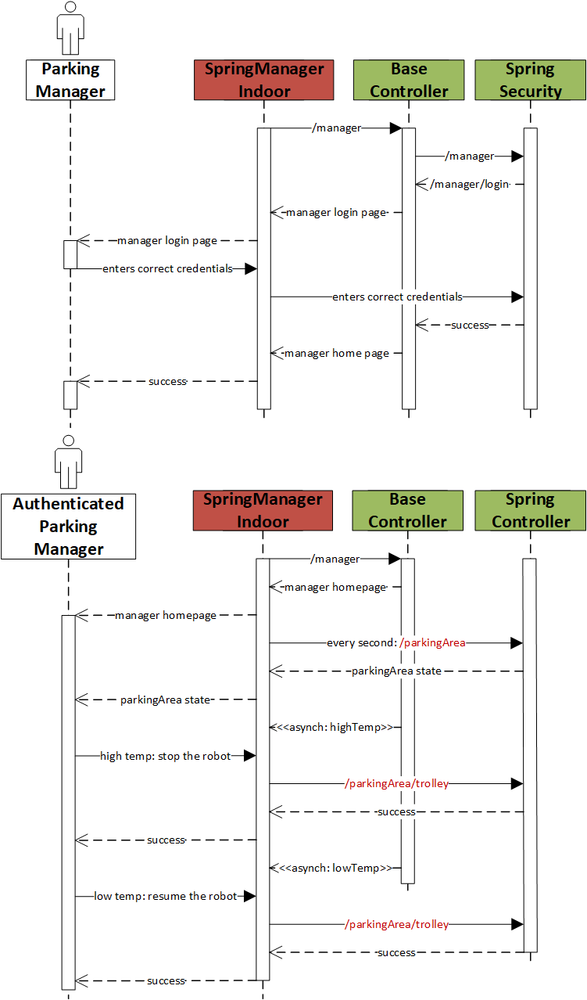
|
SpringManagerView
Manager Login
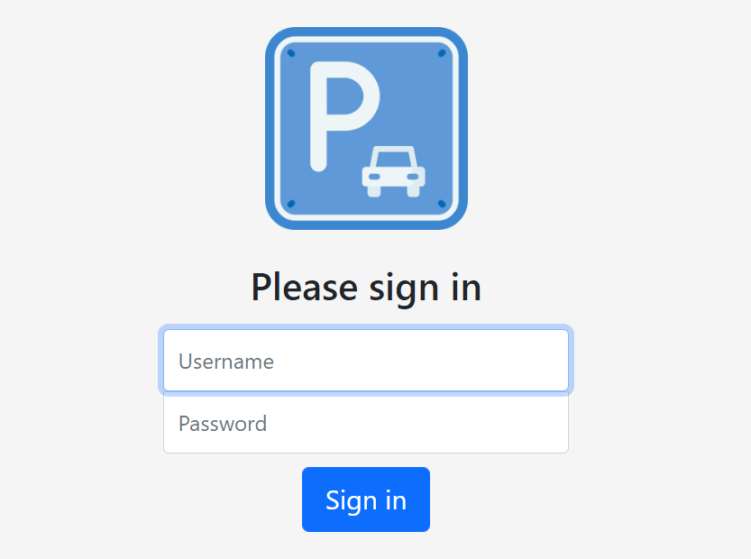
|
Manager Login failed
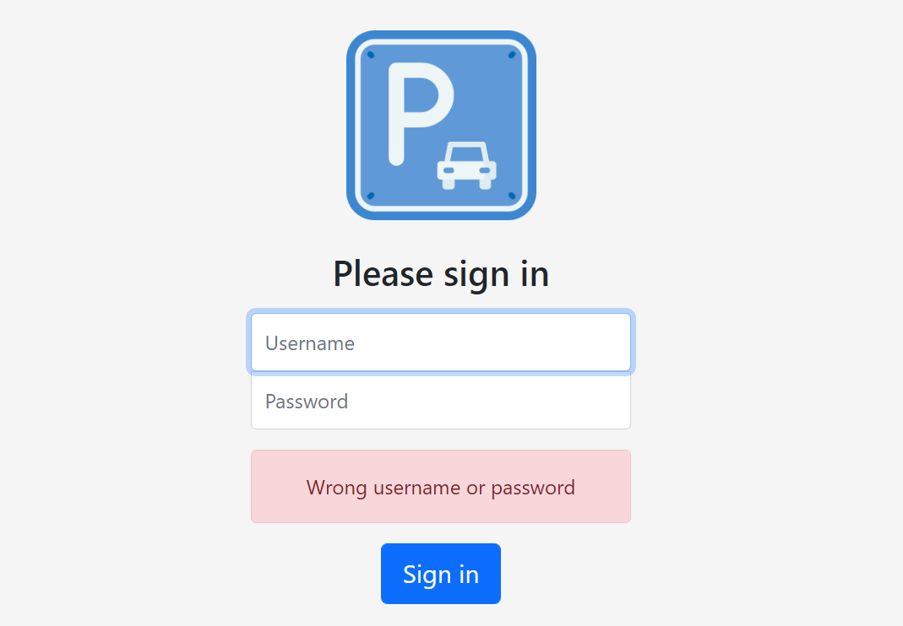
|
Manager Homepage
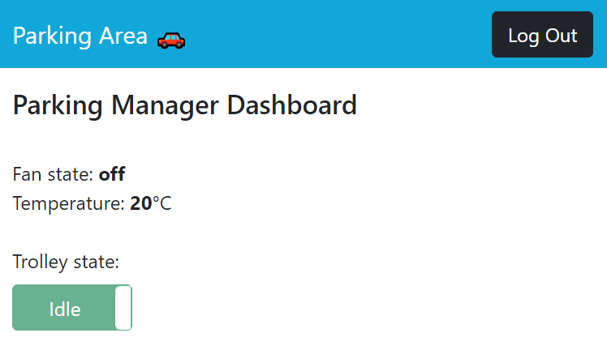
|
Manager Logout
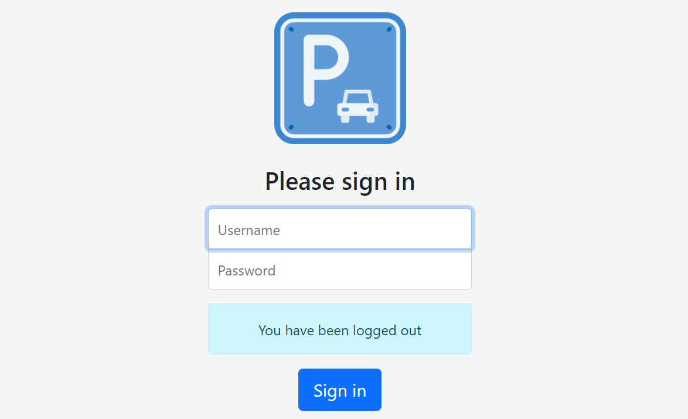
|
Manager Homepage: outdoor area engaged alarm
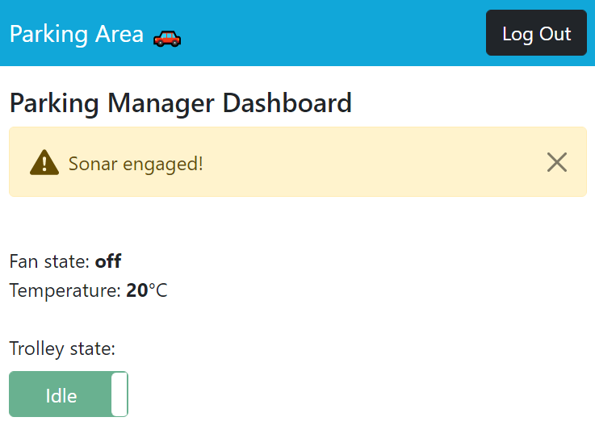
|
Manager Homepage: high temperature alarm
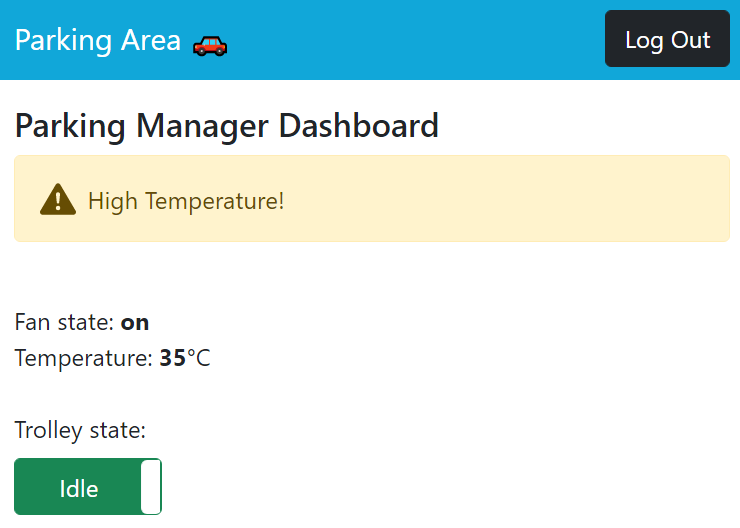
|
Manager Homepage: trolley can't be stopped (low temperature)
|
Manager Homepage: trolley stopped
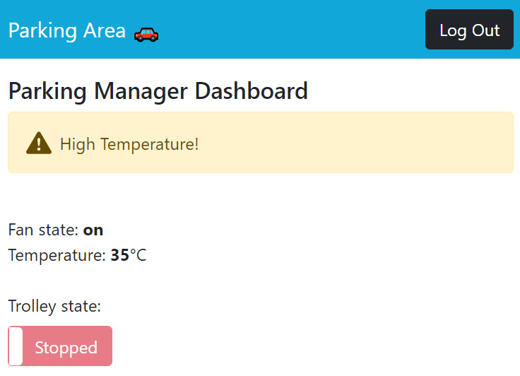
|
Thermometer
The need of a Sensor Interface (cont.d)
As for the weight sensor in the first sprint and the sonar in the second sprint, we have added a ThermometerInterface to abstract the concept of Thermometer from the technology that it uses to communicate. As thermometers are deemed sensors, they are usually constrained devices, so we decided to use the CoAP protocol once again for
our implementation of the interface.
Apart from the usual get<RESOURCESTATE>, this interface also provides a method to register observers to the attached Resource: in our case, as CoAP provides an observe feature, we can implement the high temperature notification discussed in the analysis phase in this way. For this, our CoapThermometer should also implement the CoapHandler interface, which is required to attach an handler to the changed() event that the resource will send every time it is updated.
The ThermometerController and ThermometerMock
The ThermometerController will both offer the way for the ManagerService to ask the Thermometer (in the form of our ThermometerMock) for the temperature every second, and a method to let the BaseController observer to listen for high temperature notifications.
|
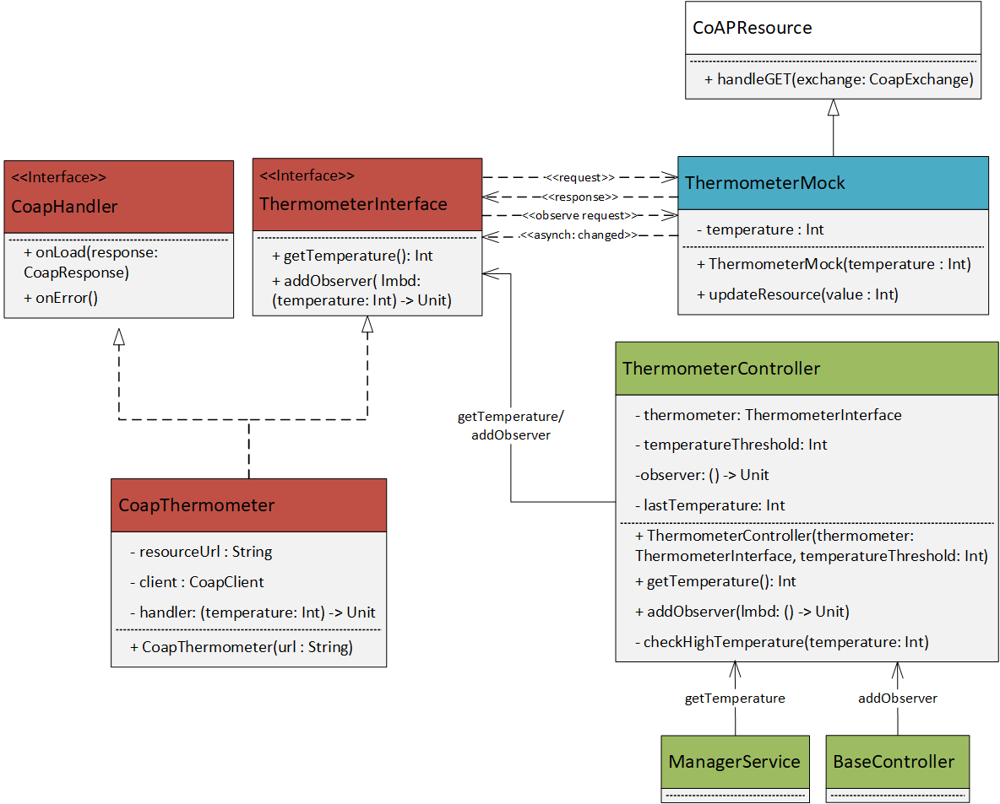
|
Fan
The need of a Sensor Interface (cont.d)
As for all our sensors, we have added a FanInterface even for the fan. The CoAP protocol was once again used for
our implementation of the interface.
Apart from the usual get<RESOURCESTATE>, this interface also provides a method to update the Resource: this is used by the BaseController observer whenever a high temperature notification arrives from the ThermometerController, to start/stop the fan accordingly.
FanMock
We implemented our fan as a FanMock and we decided not to make this resource observable, as it can be simply queried on request.
|
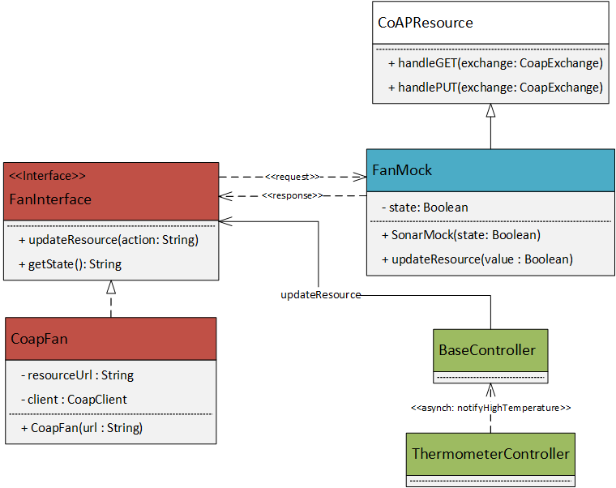
|
SonarController/SonarInterface
The
SonarInterface has been updated in the same way discussed in the
ThermometerInterface section (see also the attached image for a class diagram update).
The
SonarController has been updated with the remaining of its business logic: it now has a method
addObserver() which allows
external observer to be notified when the outdoor area is engaged for more than 60s (implemented as a
Timer task). The observer will specify a lambda to be fired when the SonarController sends the notification.
private lateinit var timer: Timer
private val timerTreshold: Int
private fun checkSonarEngaged(engaged: Boolean) {
timer = Timer()
if(engaged)
timer.schedule(this, (timerThreshold * 1000).toLong())
else
timer.cancel()
}
override fun run() {
thread { observer() }
}
Testing
To exploit the qak CoAP observable resources for testing purposes, as already done during the
first test plans of the analysis phase
and the
tests of the sprint1, and
sprint2, the
CoapObserverForTesting.kt has been reintroduced in this sprint tests.
We used the MockMVC class, provided by the SpringFramework to create mock requests and automatically test HTTP status codes/responses and the
@WithMockUser(value = "manager") annotation to create a mock user that has "MANAGER" roles to perform authenticated requests.
For all the tests we assumed these starting conditions:
- The trolley is not stopped by the manager
- The INDOOR is not relevant for this sprint
- The OUTDOOR is not engaged
- The temperature is below 30
- The parking slots' state is not relevant in this sprint
These conditions were individually changed by the single tests if they needed some other context, as described below.
We decided to implement the tests relative to this sprint under seven test classes:
Hereafter is a description of the functional tests for this
sprint requirements:
- Test that, if a car engages the OUTDOOR area for more than 5s, a notification is sent to the manager, as per F11.
- Test that the SpringController correctly answers a /parkingArea request by checking if the state got from the CoAP resources involved matches what returned by the ManagerService, as per F12
- Test that the SpringController successfully manages a /parkingArea/trolley PUT request of stopping the trolley by checking if the trolley state from the CoAP resource is "trolley STOPPED", as per F14-NF4. Also check that this is only possible in the right circumstances: a stop request can be forwarded only if TMAX>30, and a resume only if TMAX<30. Check that the server answers with a code 401 Forbidden if that is not the case
- Test that the system automatically starts (stops) the fan when TMAX>30 (<30), as per F15. Test this by updating the ThermometerMock and asserting that the fan CoAP state matches the requirements
Single components unit tests are self-explanatory, and omitted for brevity.
Last product owner test
As last assignment, the product owner has instructed us to conduct the following test:
- The system has nfree free slots
- Temperature < TMAX; Fan off; IN/OUTDOOR area free
- Simulate the system receiving (spaced out by two seconds):
- an enter request
- a carenter request
- a pickup request
- Define the state changes of the system answering the requests
- Point out the strategy used to automate the test
The full test code is available
here.
System states transitions explanation
As one can see from the
test logs, after the system startup, the clientservice actor
accept the first
enter request (
reqenter in our system), transitioning in the
handleEnterRequest state:
connQakTcp | request= msg(reqenter,request,springcontroller,clientservice,reqenter(X),16)
clientservice in handleEnterRequest | msg(reqenter,request,springcontroller,clientservice,reqenter(X),16)
The service computes the first free parking slot and answers to the SpringController with a
enter(2) reply
clientservice reply to reqenter
clientservice reply enter(2)
connQakTcp | answer= msg(enter,reply,clientservice,springcontroller,'{"code":0,"message":"2"}',17)
That is translated by the SpringController in a "success" HTTP response for the client:
MockHttpServletRequest:
HTTP Method = GET
Request URI = /client/reqenter
[...]
MockHttpServletResponse:
Status = 200
[...]
Body = {"parkingSlot":2}
After two seconds, the
carenter(2) request is sent by the client: it is forwarded by the SprinController to the ClientService actor, triggering its transition into the
enterthecar state:
connQakTcp | request= msg(carenter,request,springcontroller,clientservice,carenter(2),18)
clientservice in enterthecar | msg(carenter,request,springcontroller,clientservice,carenter(2),18)
Once again, the request is successfully accepted and processed by the ClientService, which answers to the SpringController with the generated
TOKENID> (
receipt response):
clientservice reply to carenter
connQakTcp | answer= msg(receipt,reply,clientservice,springcontroller,'{"code":0,"message":"218082021021242"}',19)
MockHttpServletRequest:
HTTP Method = GET
Request URI = /client/carenter
[...]
MockHttpServletResponse:
Status = 200>
[...]
Body = {"tokenId":"218082021021242"}
The ClientService now sends the first
moveToInOutdoor(indoor) dispatch to the trolley, triggering its
working state; the trolley plans a path to the INDOOR area and reaches it to collect the car to park:
trolley in working | msg(moveToInOutdoor,dispatch,clientservice,trolley,moveToInOutdoor(indoor),20)
trolley trip to INDOOR start
setGoal 6,0 while robot in cell: 0,0 direction=downDir
[...]
plannerUtil doPlan actions=[l, w, w, w, w, w, w]
trolley trip to INDOOR end
At this point the ClientService sends a
moveToPark(2) dispatch to the trolley to make it move to the slotnum 2; the trolley doesn't leave the working state, and promptly performs the moveToPark task:
clientservice moves the car to SLOTNUM = 2
trolley in working | msg(moveToPark,dispatch,clientservice,trolley,moveToPark(2),27)
trolley moveToPark(2)
setGoal 1,2 while robot in cell: 6,0 direction=rightDir
[...]
plannerUtil doPlan actions=[l, l, w, w, w, w, w, l, w, w]
At the same time, the
pickup request (
reqexit(TOKENID)) arrives from the SpringController to the ClientService. It stores the request in its message queue, to be performed as soon as the moveToPark dispatch is sent to the trolley:
connQakTcp | request= msg(reqexit,request,springcontroller,clientservice,reqexit(117082021120000),28)
%%% ActorBasicFsm clientservice | added msg(reqexit,request,springcontroller,clientservice,reqexit(117082021120000),28) in msgQueueStore
clientservice waiting ...
As soon as it's ready, the ClientService accepts the reqext, transitioning in the
handleOutRequest state: checks if the TOKENID is valid and succesfully answer to the SpringController after the check:
clientservice in handleOutRequest | msg(reqexit,request,springcontroller,clientservice,reqexit(117082021120000),28)
clientservice reply to reqexit
connQakTcp | answer= msg(exit,reply,clientservice,springcontroller,'{"code":0,"message":"Success"}',30)
MockHttpServletRequest:
HTTP Method = GET
Request URI = /client/reqexit
Parameters = {tokenid=[117082021120000]}
[...]
MockHttpServletResponse:
Status = 200
The ClientService also sends a
moveToPark(1) dispatch to the trolley to move it to collect the requested parked car, followed by a
moveToInOutdoor(outdoor) to move it to the outdoor area; the trolley performs the action immediately:
clientservice moves the car from SLOTNUM = 1
trolley in working | msg(moveToPark,dispatch,clientservice,trolley,moveToPark(1),31)
trolley moveToPark(1)
setGoal 1,1 while robot in cell: 1,2 direction=downDir
plannerUtil doPlan actions=[r, r, w]
trolley in working | msg(moveToInOutdoor,dispatch,clientservice,trolley,moveToInOutdoor(outdoor),38)
trolley trip to OUTDOOR start
setGoal 6,4 while robot in cell: 1,1 direction=upDir
plannerUtil doPlan actions=[l, l, w, w, w, l, w, w, w, w, w]
trolley trip to OUTDOOR end
Finally, the trolley is free to return to its home, as there are no more requests to satisfy; it transits to the IDLE state, plans a path to the HOME, and performs it:
trolley IDLE
setGoal 0,0 while robot in cell: 6,4 direction=rightDir
plannerUtil doPlan actions=[l, w, w, w, w, l, w, w, w, w, w, w]
trolley at HOME
How we automated the test
For the test, we launched two coroutines in parallel (one for the SpringMockMVC which does the requests and one for the testing observer to receive coap state updates from the trolley): this was
needed as we wanted to test both the HTTP responses to the APIs and the trolley states and position on the map at the same time.
As always we used the CoapObserverForTesting to be notified of the trolley state changes, and we tested that all the states and messages were sent by the troelly in the correct order and how we expected them.
Firstly, created the observer and a channel for the observer, so that no messages from the trolley were lost; then, we sent the requests, using the MockMVC and spacing them out by 2 s as requested while, at the same time, we
observed the trolley state (through its CoAP resource) and position (through the planner and map).
Deployment
As this sprint will end the project, we now present the full deployment plan and diagram. We decided to divide our system in 6 nodes:
- The indoorarea node: holds the WeightSensorMock its configuration files
- The outdoorarea node: holds the SonarMock and its configuration files
- The parkingarea node: holds the ThermometerMock, FanMock and their configuration files
- The parkmanagerservice node: holds two artifacts:
- parkmanagerservice-1.0.tar: contains the ClientService, ManagerService, Trolley, WeightSensor/Sonar/Fan/Thermometer Interfaces and Controllers and their configuration files. Also contains the prolog knowledge base for the qak infrastructure
- parkmanagerservice-boot-1.0.tar: contains the SpringBoot components: BaseController, SpringController, SpringSecurity and the SpringModel (e.g. ParkingSlot.kt, ApiError.kt, etc...)
Depends on the indoorarea, outdoorarea, parkingarea and basicrobot.
- The basicrobot node: holds the BasicRobot; depends on wenv
- The wenv node: holds the WEnv and the virtual robot
See the image below for a deployment diagram:
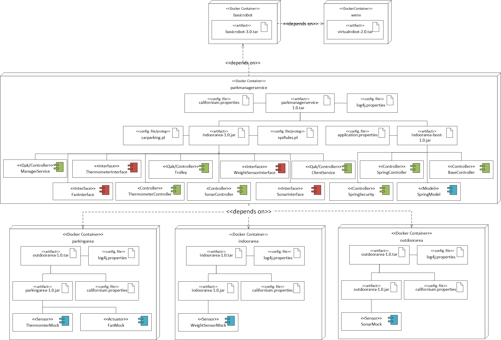
We also decided to proceed with the deployment using the Docker container technology. See the
deployment section of Sprint3 to know how to build and run the
indoorarea, outdoorarea and parkmanagerservice docker images.
parkingarea Dockerfile
We provide a
Dockerfile to build and run a Docker image for the parkingarea area.
# To build (in the parkingarea/ folder):
docker build --rm -t parkingarea .
# To run:
docker run -rm -i -p8027:8027 parkingarea
Deployment using Docker
Also see the
deployment section of Sprint3 to know how to use the
script to automatically deploy the system using one container per node.
There is one last feature introduced in this sprint to end the project: to have maximum flexibility in deployment and configuration, we decided to set all the previously embedded configuration variables in a
variables.env file. A preview of the file is here presented:
# Parking area hostname and port
PARKINGAREA_HOSTNAME=parkingarea
PARKINGAREA_PORT=8027
# Weight sensor hostname and port
WEIGHTSENSOR_HOSTNAME=indoorarea
WEIGHTSENSOR_PORT=8025
# Sonar hostname and port
SONAR_HOSTNAME=outdoorarea
SONAR_PORT=8026
# Manager credentials
MANAGER_USERNAME=manager
MANAGER_PASSWORD=admin
# Resources start values
THERMOMETER_START_VALUE=25
FAN_START_VALUE=false
WEIGHTSENSOR_START_VALUE=0
SONAR_START_VALUE=false
# Requirements alarm trigger values
TMAX=30
DTFREE=60
The values contained in this file are loaded in every container environment at the time of the
docker-compose -f automatedcarparking.yaml up; in case of problems in loading the variables, default values to be used are embedded in the code.
Sprint Summary
The coming figure represents the final outline resulting from the Sprint4. The dashed lines that group components together gives a glance of the physical deployment organization
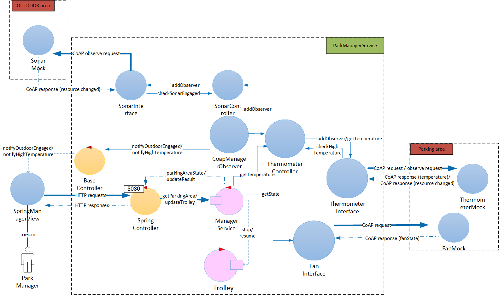
|
Summary table
Workload division
For every Sprint,
Luca Bongiovanni took care of the development of the:
- SpringController and REST-API docs
- BaseController
- Bootstrap views
- Most of the js files
- WebSocket connections
- Sensors controllers, interafaces and mocks
For every Sprint,
Gian Marco De Cola took care of the development of the:
- Trolley qak
- ManagerService qak
- ClientService qak
- SpringSecurity
- Diagrams and Documentation
The workload division reflects the single efforts of the components of the group, but there was collaboration on every task by both the components, so the presented division has been purely practical.
All the tasks performed by one component was supervised by the other after the commit. All the sprints analysis/project phases were done together. Tests and Docker files were also developed by both the components.
Technology used
- Git/GitHub: version control system
- Gradle: system build
- Discord server: video calls/screen share
- Eclipse/Intellij IDEA: IDEs
- Microsoft Visio: project diagrams
- Docker/DockerHub: deployment
- SpringFramework/SpringBoot: server-side web application
- Bootstrap: client-side web application
- Mockoon: mockAPIs for test
{kind=link}